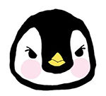
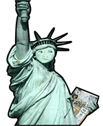

은주의 NFT
NFT 소개
은주 소개
은주의 NFT
꼼펭
자유의 꼼신상
검색
접속하기
로그인
회원가입
은주의 NFT
이 사이트는 은주의 NFT 소개 페이지 입니다.
NFT 보러 가기
nft란?
nft에 대해 소개합니다.
자세히 알아보기
은주 소개
은주에 대해 소개합니다.
자세히 알아보기
은주의 NFT
은주가 만든 NFT를 보여줍니다.
자세히 알아보기
NFT 목록

꼼펭
NEW
꼼펭은 펭귄입니다.
은주가 키우는 펭귄으로
포토샵 브러쉬를 이용해 만들었습니다.

자유의 꼼신상
NEW
자유의 여신상에 은주 얼굴을 합성해서 넣고
미국 독립 선언문 대신 강의할때 사용하던 컴활 1급 책을
들고 있습니다.
NFT의 특징
×
NFT는 Non-Fungible Token의 약자로, 우리말로 “대체 불가능한 토큰”을 뜻합니다.
쉽게 말해 블록체인 기술을 적용한 디지털 토큰을 말하는데, 대표적인 특징으로 아래와 같이
3가지를 꼽을 수 있습니다.
복제불가 (Non-fungible)
소유권 인정
희소성 부여